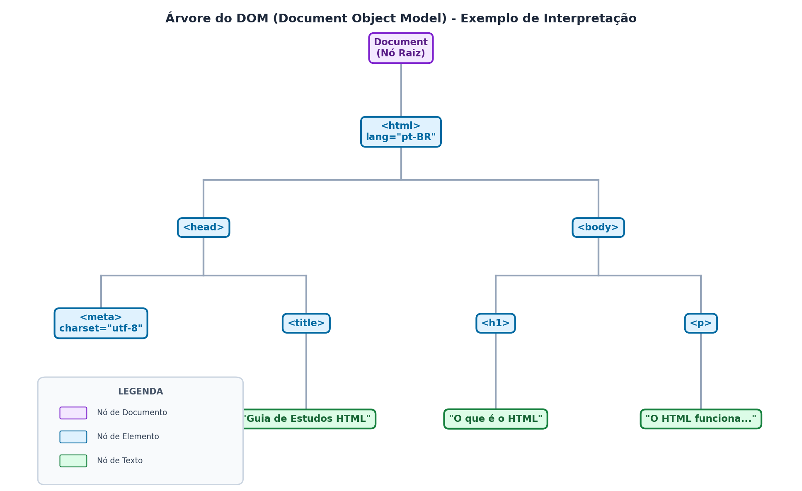

O que é o HTML
O HTML (HyperText Markup Language, ou Linguagem de Marcação de Hipertexto) é o bloco de construção mais básico e elementar da Web, servindo como a fundação estrutural de todo site.
Ele não é uma linguagem de programação, mas sim uma linguagem de marcação que instrui os navegadores sobre como estruturar, organizar e apresentar o conteúdo das páginas que você visita.
Como ele funciona?
O HTML utiliza uma árvore lógica de nós e marcações para anotar textos, imagens e outros elementos para exibição. Ele consiste em uma série de elementos que você usa para envolver, "marcar" ou delimitar partes do conteúdo para fazê-lo agir ou aparecer de uma determinada maneira. Por exemplo, as marcações podem transformar um texto simples em um cabeçalho, um parágrafo de texto ou um hiperlink que conecta uma página a outra
A anatomia de um elemento HTML padrão é dividida em três partes principais:
- Tag de abertura (opening tag): Consiste no nome do elemento envolvido por colchetes angulares < > (como <p> para parágrafos ou <h1> para títulos principais). Ela indica onde o elemento e suas instruções começam a fazer efeito.
- O conteúdo (content): É a informação ou texto real que está sendo estruturado.
- Tag de fechamento (closing tag): Idêntica à tag de abertura, mas inclui uma barra inclinada para frente / antes do nome do elemento (como </p> ou </h1>), marcando onde a instrução do elemento termina.
A "Tríade da Web"
A "Tríade da Web" refere-se às três tecnologias fundamentais que compõem a web: HTML (HyperText Markup Language), CSS (Cascading Style Sheets) e JavaScript.
HTML
HTML (HyperText Markup Language) é a linguagem de marcação padrão para criar páginas web. Ele define a estrutura e o conteúdo de uma página, usando elementos como cabeçalhos, parágrafos, links e imagens.
CSS
CSS (Cascading Style Sheets) é a linguagem de estilo usada para controlar a apresentação de elementos HTML. Ela permite definir cores, fontes, espaçamentos e outras propriedades visuais.
JavaScript
JavaScript é a linguagem de programação que adiciona interatividade às páginas web. Ela permite criar funcionalidades dinâmicas, como validações de formulários, animações e manipulação do DOM.
Ferramentas Necessárias
Um Editor de Códigos (como o VS Code): Um arquivo HTML é, na verdade, um arquivo de texto normal e puro (como um arquivo .txt) que carrega a extensão .html por ser texto simples, ele pode ser aberto e editado em qualquer programa de texto contudo, para programar de forma eficiente, recomenda-se o uso de um editor de códigos dedicado. O Visual Studio Code (VS Code) é a ferramenta recomendada evite usar editores como o Microsoft Word, pois eles processam formatações proprietárias e não salvam o arquivo como texto puro.
Um Navegador Web (Browser): Qualquer site que você acessa no mundo executa e exibe HTML o navegador (como o Google Chrome, Mozilla Firefox, entre outros) é o encarregado de ler o arquivo de marcação que você escreveu e renderizá-lo de forma visual na tela.
A Extensão Live Server (para o VS Code): Essa extensão é um recurso valioso que simula um servidor local diretamente no seu computador ao ativá-la no VS Code (utilizando o atalho ctrl shift p e digitando Open Live Server), ela disponibiliza um endereço de rede local (127.0.0.1 ou localhost na porta 5500) para ler e exibir seu arquivo index.html.
- A grande vantagem: O Live Server atualiza a página no seu navegador de forma automática e em tempo real toda vez que você altera e salva o código no editor, sem que você precise recarregar a tela manualmente.
História
A história do HTML nasce da necessidade de resolver um problema prático enfrentado por cientistas no final dos anos 1980: como compartilhar informações e pesquisas de forma simples entre computadores diferentes. Em 1989, o físico e cientista da computação britânico Tim Berners-Lee trabalhava no CERN (Organização Europeia para a Pesquisa Nuclear), na Suíça. Na época, milhares de pesquisadores do mundo todo usavam computadores e sistemas operacionais totalmente incompatíveis entre si. Se um cientista quisesse ler a pesquisa de outro, muitas vezes precisava aprender um sistema novo ou formatar os dados manualmente. Para resolver essa confusão, Berners-Lee escreveu a proposta inicial do que chamou de World Wide Web (WWW), unindo o conceito de hipertexto — textos contendo links que permitiam ao leitor saltar de um documento para outro com um simples clique — com a infraestrutura já existente da internet.
Em 1991, Berners-Lee publicou o primeiro documento público especificando o HTML (HyperText Markup Language), contendo apenas 18 tags básicas — das quais 11 permanecem em uso no HTML5 moderno, incluindo a tag de parágrafo <p>, os títulos de <h1> a <h6> e a revolucionária tag <a> para criar hiperlinks. Com o crescimento acelerado da rede, Berners-Lee fundou em 1994 o World Wide Web Consortium (W3C), uma organização com o objetivo de criar padrões universais e evitar que a web se dividisse em tecnologias proprietárias. Em 1995, o HTML 2.0 tornou-se o primeiro padrão oficial padronizado pela IETF. Mais tarde, nos anos 90, o surgimento da competição acirrada entre os navegadores Netscape e Internet Explorer (a chamada "guerra dos navegadores") fez com que as empresas tentassem criar suas próprias tags proprietárias não padronizadas, como a famosa tag <blink> para fazer o texto piscar.
A consolidação da linguagem veio em 1999 com o lançamento do HTML 4.01, que oficializou o suporte a formulários avançados, tabelas e a separação clara entre a estrutura do documento (HTML) e o seu visual (CSS). Após um período de estagnação nos anos 2000, em que a W3C tentou substituir o HTML pelo mais rígido XHTML, uma frente conjunta de desenvolvedores e grandes navegadores formou o WHATWG para criar uma evolução moderna da linguagem. Esse movimento culminou no desenvolvimento do HTML5, padronizado em 2014, trazendo suporte nativo para reprodução de áudio e vídeo, gráficos dinâmicos e tags semânticas avançadas.
Hoje, o sucesso global do HTML deve-se em grande parte à decisão histórica do CERN, que em 1993 liberou o código-fonte e os direitos da tecnologia da World Wide Web totalmente para o domínio público, sem a cobrança de royalties, permitindo que a linguagem se tornasse a espinha dorsal gratuita e acessível da internet que usamos todos os dias.
Como Funciona o HTML
O HTML funciona por meio do processamento de arquivos de texto puro (geralmente com a extensão .html) pelo navegador, que analisa e renderiza esse código de forma estruturada para o usuário.
Abaixo estão os pilares de como esse mecanismo opera nos bastidores, estruturados de maneira simples e ideal para o seu site de iniciantes:
- O Processo de Parsing e a Criação do DOM
Quando o navegador abre um arquivo HTML, ele realiza uma leitura técnica chamada parsing (análise sintática) - O navegador lê as marcações e as converte em uma estrutura lógica em memória chamada DOM (Document Object Model).
- O DOM funciona como uma árvore lógica de nós, onde cada elemento (como parágrafos, cabeçalhos e imagens), trechos de texto e até mesmo comentários são representados como nós interconectados em uma hierarquia.
- Essa árvore em memória é o que permite ao navegador renderizar a página de forma correta e possibilita que scripts (como JavaScript) acessem e alterem o conteúdo em tempo real.
- A Declaração do DOCTYPE (Evitando o Quirks Mode)
A primeira linha de qualquer documento HTML5 moderno deve conter a declaração <!doctype html> - Historicamente, as declarações de tipo de documento apontavam para regras gramaticais e estruturas complexas e longas de SGML.
- Hoje, ela serve como uma instrução prática para avisar o navegador que ele deve usar o modo de renderização moderno e em conformidade com as regras estritas da especificação (No-Quirks Mode), impedindo que o navegador entre no "Quirks Mode" (um modo legado e imprevisível que pode quebrar layouts visuais).
- Regras Sintáticas Essenciais
Para que o interpretador do navegador leia o código sem gerar erros, existem regras fundamentais de sintaxe: - Aninhamento Correto (Nesting): Os elementos HTML devem ser abertos e fechados seguindo estritamente a ordem de inclusão. Se você abrir um parágrafo <p> e depois destacar uma palavra com <strong>, você deve fechar </strong> antes de fechar </p>. Cruzar tags incorretamente obriga o navegador a adivinhar sua intenção, o que pode quebrar a consistência visual.
- Colapso de Espaços em Branco (Whitespace Collapsing): O parser do HTML ignora múltiplos espaços, quebras de linha e tabulações consecutivas no seu código-fonte, reduzindo tudo a um único espaço em branco na tela. Caso seja necessário manter a formatação original do texto exatamente como foi escrita, deve-se empregar o elemento <pre>
- Elementos Vazios (Void Elements): Ao contrário dos elementos comuns, tags como <br> (quebra de linha) ou <img> (imagem) não possuem corpo nem tag de fechamento, agindo de forma autossuficiente
- Uso de Atributos: Tags de abertura aceitam atributos no formato de pares de chave e valor (ex: src="foto.png") para estender as funções do elemento. Há também atributos booleanos (como disabled em campos de formulário), onde a simples presença do atributo é avaliada como verdadeira.
- Tolerância a Falhas e Correção de Erros
O parser do HTML moderno foi desenhado sob princípios pragmáticos de alta tolerância a erros. - Se você cometer pequenos deslizes (como esquecer de fechar uma tag), o navegador usará regras internas detalhadas para tentar adivinhar a estrutura correta e criará os nós correspondentes na árvore do DOM de forma autônoma (por exemplo, assumindo o fechamento implícito de um parágrafo quando outro elemento começa).
- Embora isso impeça que a página "quebre" completamente na tela do usuário, o recomendado é manter o código livre de erros sintáticos para garantir performance, acessibilidade e consistência em todos os tipos de dispositivos.

IDEs
Para começar a criar sites, você não precisa de nenhum programa de edição de texto complexo (como o Microsoft Word, que gera arquivos formatados que apenas ele consegue processar). O HTML é, na verdade, escrito em texto puro. Isso significa que um arquivo HTML é como um arquivo .txt comum. Teoricamente, você poderia escrever todo o seu site no Bloco de Notas do Windows ou em qualquer editor de textos básico. No entanto, programadores profissionais utilizam editores de código ou IDEs (Ambientes de Desenvolvimento Integrados) porque eles oferecem recursos que facilitam muito a escrita:
- Coloração de código (Syntax Highlighting): Ajuda a diferenciar visualmente o que são tags, atributos e textos.
- Autocompletar (IntelliSense): Fecha as tags automaticamente para você, reduzindo erros de digitação comuns em
Editores de Texto Puro vs. Processadores de Formatação
- O Diferencial: É muito didático explicar aos iniciantes a diferença entre um arquivo de texto formatado e um arquivo de texto puro. Editores de texto básico (como o Bloco de Notas ou equivalentes de arquivos .txt) funcionam perfeitamente para criar arquivos .html. O grande diferencial dessa explicação para iniciantes é alertá-los de que nunca devem usar o Microsoft Word para escrever código, pois ele tenta embutir regras de estilo proprietárias que quebram a leitura do navegador.
Ambientes Interativos Online (Playgrounds)
Para os alunos que estão nos primeiros minutos de estudo e ainda não desejam instalar nenhum software localmente em sua máquina, os materiais recomendam plataformas na nuvem:
- MDN Playground: Um ambiente interativo de testes online oferecido pela MDN. O aluno pode editar trechos de códigos diretamente no navegador e clicar em "Play" para executar o código em tempo real, contando também com o botão "Reset" para restaurar o estado inicial caso cometa algum erro de sintaxe.
- Scrimba: Plataforma de aprendizado parceira que oferece explicações de código e scrims interativos para que os estudantes possam praticar o manuseio das tags HTML de maneira guiada e visual.
Alguns exemplos de IDEs
Visual Studio Code: O programa mais usado no mundo, gratuito, leve e com muitas extensões úteis.
Sublime Text: Um editor muito rápido, leve e simples, ótimo para quem está começando a aprender.
Notepad++: Um bloco de notas avançado e gratuito para computadores com Windows, ideal para edições rápidas de código.
DOM
O DOM (Document Object Model, ou Modelo de Objeto do Documento) é uma das partes mais importantes do desenvolvimento web, e explicá-lo de forma simples é essencial para iniciantes. De forma direta, ele é a representação em memória do seu documento HTML criada pelo navegador
Quando você escreve o código do seu site em texto puro e o carrega em um navegador, o programa realiza um processo chamado parsing (análise sintática). Ele lê suas tags e as traduz em uma estrutura viva. Se você cometer erros ou omitir tags que deveriam existir (como esquecer de fechar um elemento ou omitir as tags <html> e <body>), o navegador ativará mecanismos de tolerância a falhas e criará esses nós no DOM de forma automática para tentar renderizar a página corretamente
A Estrutura de Árvore (DOM Tree)
O DOM é estruturado como uma árvore genealógica composta por nós (nodes) interconectados através de relações de "pai e filho". O nó principal e raiz de onde todos os outros nascem é o elemento html.
No diagrama-dom-html-v3.png (que você pode visualizar no painel Studio à direita), estruturamos exatamente esse fluxo. Existem quatro tipos principais de nós que seus alunos precisam conhecer:
- Nó de Tipo de Documento (DocumentType node): É representado pela instrução <!doctype html> na primeira linha do seu código
- Nós de Elemento (Element nodes): São as tags do seu HTML (como head, body, h1, p e a)
- Nós de Texto (Text nodes): São as palavras reais que ficam dentro das suas tags. Um fato curioso para ensinar aos alunos é que espaços em branco e quebras de linha que você deixa no código para deixá-lo organizado também geram nós de texto invisíveis na árvore do DOM.
- Nós de Comentário (Comment nodes): Suas anotações feitas com <!-- comentário --> também são salvas na memória como nós, embora o navegador não as renderize na tela
Por que o DOM é tão importante? (A ponte com a programação)
O HTML sozinho é apenas um arquivo estático. O DOM existe para transformar esse texto em objetos interativos que linguagens de programação (como o JavaScript) conseguem ler e modificar.
Cada nó da árvore do DOM se torna um objeto com propriedades e ações próprias (conhecidas como APIs). Por meio dessas APIs, scripts JavaScript podem realizar ações dinâmicas na página, tais como:
- Selecionar um elemento específico na tela.
- Mudar o destino de um hiperlink alterando diretamente o atributo href do objeto.
- Substituir o texto de um cabeçalho em tempo real após uma ação do usuário.
- Adicionar ou remover elementos da tela de forma instantânea sem precisar recarregar o site.
Sem o DOM, os navegadores não teriam como entender a estrutura de uma página de forma dinâmica, impossibilitando a existência de redes sociais com atualizações em tempo real, jogos e sistemas interativos modernos.
Comentários em HTML: Notas Invisíveis no Código
Quando estamos escrevendo códigos mais longos ou trabalhando em equipe, é muito comum precisarmos deixar recados, explicações ou lembretes dentro do nosso arquivo. Para isso, o HTML nos oferece o recurso dos comentários:
O que são comentários?
Os comentários são trechos de texto inseridos no código-fonte que o navegador ignora totalmente durante o processamento da página. Isso significa que eles são completamente invisíveis para o usuário final que visita o seu site. O interpretador do navegador simplesmente os descarta na hora de renderizar a tela.
Como escrever um comentário?
Para escrever um comentário em HTML, você deve envolver o seu texto dentro de marcadores muito específicos:
- Para abrir o comentário, use: <!-- (sinal de menor, exclamação e dois hifens)
- Para fechar o comentário, use: --> (dois hifens e sinal de maior)
Exemplo prático:
Para que servem os comentários no mundo real?
Ensinar os estudantes a usarem comentários desde o primeiro dia é uma excelente prática de desenvolvimento por duas razões principais:
- Organização e Documentação: Servem para deixar notas explicativas sobre como certas partes do código funcionam. Isso ajuda muito quando você retorna a um projeto antigo após meses afastado e precisa lembrar o que fez, ou quando um colega de equipe precisa mexer no seu código.
- Depuração (Debug): Permite "desativar" temporariamente uma tag ou seção do site para fazer testes visuais, sem que você precise apagar e reescrever o código depois.
Dica de ouro para os alunos: No VS Code, o estudante não precisa digitar esses símbolos manualmente. Basta selecionar a linha desejada e usar o atalho de teclado Ctrl + ; (no Windows) ou Cmd + / (no Mac) para comentar ou descomentar o código de forma instantânea!
Caracteres Especiais e Entidades no HTML
Quando você está escrevendo o conteúdo de uma página web, alguns caracteres não podem ser digitados diretamente de forma simples. Isso acontece porque caracteres como <, >, &, " e ' são caracteres reservados pela sintaxe do HTML.
O Problema dos Símbolos Reservados
Se você quiser exibir na tela um texto explicando o HTML, como:
"No HTML, definimos um parágrafo usando a tag <p>."
E escrever exatamente assim no seu código:
<p>No HTML, definimos um parágrafo usando a tag <p>.</p>
O navegador vai se confundir! Ele achará que o segundo
é o início de um novo parágrafo real, quebrando toda a estrutura da sua página.
A Solução: Referências de Entidade de Caracteres
Para resolver isso, o HTML utiliza códigos especiais chamados entidades de caracteres. Cada entidade funciona como um "atalho de texto" seguro que diz ao interpretador: "Exiba este símbolo na tela, mas não o trate como código". Toda entidade de caractere possui uma regra de escrita fixa:
- Começa obrigatoriamente com um e-comercial (&).
- Tem o nome ou sigla do caractere (geralmente abreviações em inglês).
- Termina obrigatoriamente com um ponto e vírgula (;).
Os Caracteres Reservados Mais Importantes:
| Símbolo | Significado do Símbolo | Código da Entidade | Como Lembrar |
|---|---|---|---|
| < | Menor que | < | Associado ao termo "less than" |
| > | Maior que | > | Associado ao termo "greater than" |
| & | E comercial | & | Associado ao termo "ampersand" |
| " | Aspa dupla | " | Associado ao termo "quote" |
| ' | Aspa simples | ' | Associado ao termo "apostrophe" |
Emojis no HTML: Suporte Nativo e Moderno
No HTML moderno, você não precisa de imagens ou ícones externos complexos para exibir símbolos como rostinhos felizes (😊), estrelas (⭐) ou foguetes (🚀). Você pode inseri-los diretamente como texto comum no seu código.
Como o navegador entende os Emojis?
Para que os emojis e múltiplos idiomas funcionem perfeitamente sem quebras de codificação ou o surgimento daqueles "quadradinhos vazios" indesejados, é essencial avisar ao navegador qual mapa de caracteres o arquivo está usando.
O padrão universal e recomendado para a web é a codificação UTF-8, que engloba quase todos os caracteres de escrita humana do planeta e a biblioteca oficial de emojis.
O Comando Obrigatório: <meta charset="utf-8">>
Para garantir que seu site interprete os emojis de forma nativa e segura, você deve adicionar uma linha específica de metadado dentro da tag <head> de todas as páginas do seu site:
<!doctype html>
<html lang="pt-BR">
<head>
<!-- Esta linha garante o suporte a emojis e caracteres especiais -->
<meta charset="utf-8">
<title>Minha primeira página com Emojis</title>
</head>
<body>
<h1>Estudando HTML! 🚀📚</h1>
<p>O HTML5 é incrível e muito divertido. 😉🎉</p>
</body>
</html>
Sem essa linha, o interpretador do navegador pode se confundir de acordo com o idioma da máquina do usuário, estragando a apresentação do texto.
Trabalhando com Imagens no HTML
Inserir imagens é um dos recursos mais comuns no desenvolvimento de um site. No entanto, para criar páginas rápidas e acessíveis, seus alunos precisam compreender as diretrizes corretas de uso, desde a sintaxe básica até o carregamento responsivo.
A Sintaxe Básica: O elemento <img>
O elemento <img> é um elemento vazio (void element), o que significa que ele não possui conteúdo interno de texto e não precisa de uma tag de fechamento (não existe </img>). Ele funciona puramente por meio de atributos.
Os atributos fundamentais de uma imagem são:
- src (obrigatório): Define o caminho ou URL onde o arquivo de imagem está armazenado.
- alt (essencial para acessibilidade): Uma descrição textual da imagem para usuários com deficiência visual (que utilizam leitores de tela) ou para quando a conexão falha e a imagem não carrega.
- width e height: Definem, em pixels, as dimensões visuais da imagem. Especificar esses tamanhos ajuda o navegador a reservar o espaço do layout antes mesmo de carregar a imagem, evitando que o conteúdo da página "pule" durante o carregamento (um erro de performance conhecido como Cumulative Layout Shift ou CLS).
Exemplo de código:
<img src="foto-cachorro.jpg" alt="Um filhote de Golden Retriever correndo na grama" width="400" height="300">
Dica de Acessibilidade (a11y): Se a imagem for puramente decorativa (como um fundo ou uma linha divisória), o atributo alt nunca deve ser omitido. Em vez disso, declare-o explicitamente vazio (alt=""), o que avisa aos leitores de tela que eles podem ignorar essa imagem sem prejuízo para o usuário.
Avançado: Imagens Responsivas e Performance
Para que o site carregue rapidamente em dispositivos móveis sem consumir dados móveis excessivos com fotos gigantescas, o HTML5 traz recursos modernos de automação.
Resolução Alternada com srcset e sizes
Se você quer exibir a mesma imagem, mas em tamanhos menores para celulares e maiores para telas de computadores, use os atributos srcset e sizes diretamente na tag <img>:
- srcset: Oferece uma lista de arquivos de imagem com suas respectivas larguras nativas em pixels (usando a unidade especial w).
- sizes: Dá "dicas" ao navegador sobre o tamanho físico que a imagem ocupará na tela de acordo com o tamanho do dispositivo (usando media queries).
Exemplo:
<img src="foto-800w.jpg"
srcset="foto-480w.jpg 480w, foto-800w.jpg 800w"
sizes="(max-width: 600px) 480px, 800px"
alt="Uma bela paisagem de montanhas">
No exemplo acima, se o celular do usuário tiver uma tela estreita (até 600px), o navegador baixará automaticamente o arquivo menor de 480px (poupando internet), enquanto telas maiores baixarão a versão de 800px.
Arte Direcional e Formatos Modernos com <picture></picture>
Quando você precisa alterar a composição visual da imagem (por exemplo, exibir uma foto em formato paisagem no computador e uma foto cortada em modo retrato focando no rosto de uma pessoa no celular), usamos o elemento <picture>. O <picture> serve como um "envelope" que abriga tags <source> com condições de tela (media) e um elemento final <img> padrão que atua como fallback de segurança:
<picture>
<!-- Exibe retrato fechado em telas menores que 800px -->
<source media="(width < 800px)" srcset="rosto-celular.jpg">
<!-- Exibe paisagem aberta em telas maiores ou iguais a 800px -->
<source media="(width >= 800px)" srcset="grupo-computador.jpg">
<!-- Fallback obrigatório para navegadores que não suportam picture -->
<img src="grupo-computador.jpg" alt="Foto de equipe em um escritório">
</picture>
Carregamento Preguiçoso: loading="lazy"
Para economizar banda e aumentar a velocidade inicial do site, adicione o atributo loading="lazy" nas suas imagens. Isso instrui o navegador a adiar o carregamento da imagem até que o usuário esteja rolando a página para perto dela.
Trabalhando com Áudio no HTML5
Antes do surgimento do HTML5, reproduzir um arquivo de som em uma página web era uma tarefa complexa que exigia a instalação de plugins externos de terceiros, pesados e frequentemente inseguros, como o Adobe Flash.
Com o HTML5, a web ganhou o elemento nativo <audio>, permitindo que navegadores executem arquivos de áudio diretamente de forma leve e nativa.
A Sintaxe Básica do <audio>
A tag <audio> utiliza o atributo src para apontar para o arquivo de som e necessita de uma tag de fechamento </audio>. Entre a abertura e o fechamento, você pode adicionar um texto simples que servirá de aviso para navegadores muito antigos que não suportam esse recurso.
<audio src="musica.mp3" controls>
Seu navegador não suporta a reprodução de áudio nativo.
</audio>
Atributos Essenciais para Controle
Você pode personalizar o comportamento do player de áudio adicionando os seguintes atributos nativos diretamente na tag de abertura:
- controls: Exibe a barra de controle padrão do navegador (contendo botão de Play/Pause, controle de volume, barra de progresso e seletor de faixa de tempo). Sem esse atributo, o player de áudio fica completamente invisível na página.
- autoplay: Inicia a reprodução do som automaticamente assim que a página é carregada. (Nota didática: a maioria dos navegadores modernos bloqueia o autoplay de sons para evitar experiências incômodas para o usuário, permitindo o autoplay apenas se o elemento estiver mutado).
- muted: Inicia o áudio no modo silencioso (mudo).
- loop: Faz com que o áudio reinicie continuamente do início toda vez que a reprodução terminar.
Compatibilidade de Formatos com <source>
Dispositivos e navegadores diferentes suportam formatos e codecs de áudio diferentes (como MP3, OGG ou WAV). Para garantir que o som toque em qualquer aparelho, a melhor prática é omitir o atributo src da tag <audio> e usar elementos internos chamados <source>.
O <source> é um elemento vazio (não possui tag de fechamento) que serve para listar os diferentes caminhos e formatos de arquivo. O navegador lerá a lista de cima para baixo e tocará o primeiro formato compatível que encontrar:
<audio controls>
<source src="audio.mp3" type="audio/mpeg">
<source src="audio.ogg" type="audio/ogg">
Seu navegador não suporta a reprodução deste áudio.
</audio>
Trabalhando com Vídeo no HTML5
De forma equivalente ao áudio, o elemento <video> surgiu no HTML5 como um substituto semântico para tags genéricas legadas (como <object> ou <embed>), tornando a reprodução de filmes e mídias visuais um recurso nativo do navegador.
A Sintaxe do <video> com Múltiplos Formatos
Seguindo a mesma lógica de compatibilidade, estruturamos o elemento <video> utilizando múltiplos arquivos <source> para garantir compatibilidade entre diferentes navegadores:
<video controls>
<source src="video.mp4" type="video/mp4">
<source src="video.webm" type="video/webm">
Seu navegador não suporta a reprodução deste vídeo.
</video>
Além dos atributos comuns que compartilha com o áudio (controls, autoplay, muted, loop), o elemento de vídeo possui dois atributos específicos muito úteis:
- width e height: Definem as dimensões físicas da tela do player de vídeo.
- poster: Recebe o caminho de uma imagem que funcionará como a "capa" do vídeo antes de o usuário clicar no botão de reproduzir.
Acessibilidade, Legendas e Transcrições: O elemento <track>
Uma das principais diretrizes de acessibilidade na web é garantir que conteúdos multimídia ofereçam legendas e alternativas textuais sincronizadas para usuários com deficiência auditiva ou visual.
No HTML, fazemos isso adicionando o elemento <track> como um nó filho de <video> ou de <audio>:
- O <track> carrega um arquivo de texto temporizado estruturado no formato WebVTT (com extensão .vtt).
- Seus atributos fundamentais são:
- src: O caminho para o arquivo .vtt de legendas.
- kind: Especifica a finalidade da faixa (como subtitles para tradução de diálogos, captions para descrição de sons de fundo voltada à acessibilidade, ou descriptions para audiodescrição visual).
- srclang: O código de idioma das legendas (ex: pt-BR).
- label: O título legível que aparecerá no menu do player para o usuário selecionar (ex: Português).
Exemplo de vídeo acessível:
<video controls width="640">
<source src="aula-html.mp4" type="video/mp4">
<track src="legenda-portugues.vtt" kind="subtitles" srclang="pt-BR" label="Português" default>
</video>
Criando Hiperlinks (Links) no HTML
A palavra "Hipertexto" no nome do HTML refere-se exatamente à capacidade de conectar uma página web a outra através de links. Sem os links, a internet seria apenas um monte de arquivos de texto isolados.
A Tag de Âncora: <a>
Para criar um link em HTML, utilizamos o elemento <a> (âncora). Ele é um elemento que precisa de fechamento e envolve o texto ou imagem que o usuário clicará para ser redirecionado.
O atributo mais importante da tag <a> é o href (Hypertext Reference), que indica o endereço de destino do link.
Exemplo básico:
<a href="https://www.cursoemvideo.com">Visite o Curso em Vídeo</a>
Links Absolutos vs. Links Relativos
Seus alunos precisam entender que existem duas formas de indicar o destino de um link no atributo href:
- Links Absolutos (Caminho Completo): São links que apontam para endereços externos (outros sites na internet). Eles devem sempre começar com o protocolo http:// ou https://.
- Links Relativos (Caminho Interno): São links que apontam para outras páginas dentro do seu próprio site. Eles dependem da estrutura de pastas do seu computador ou servidor.
- Se o arquivo contato.html estiver na mesma pasta que o index.html:
- Se o arquivo estiver dentro de uma subpasta chamada paginas:
<a href="https://developer.mozilla.org">Documentação da MDN</a>
<a href="contato.html">Fale Conosco</a>
<a href="paginas/sobre.html">Sobre o Site</a>
Abrindo Links em Novas Abas (target="_blank")
Por padrão, quando um usuário clica em um link, a nova página é carregada na mesma aba do navegador. Se você quiser que o link se abra em uma nova aba para que o usuário não saia do seu site, você deve adicionar o atributo target="_blank".
⚠️ Alerta de Segurança Crítico: rel="noopener noreferrer"
Quando abrimos um link em uma nova aba com target="_blank", criamos uma brecha de segurança nos bastidores. A nova página aberta ganha controle parcial sobre a aba anterior (sua página) através do JavaScript, podendo redirecionar o seu usuário para um site falso de vírus ou phishing sem que ele perceba (ataque conhecido como tabnabbing). Para evitar isso, sempre que usar target="_blank", você deve adicionar o atributo de segurança rel="noopener noreferrer":
<!-- Forma segura de abrir links em novas abas --><a href="https://www.google.com" target="_blank" rel="noopener noreferrer">Pesquisar no Google</a>
Isso corta a conexão entre as duas abas, protegendo a integridade do seu site e a segurança do seu visitante.
Boas Práticas de Acessibilidade (WCAG) e SEO
Ensinar seus alunos a escreverem links acessíveis desde o começo evitará grandes erros no mercado de trabalho:
- Evite o "Clique Aqui" ou "Saiba Mais": Leitores de tela (softwares usados por pessoas com deficiência visual) costumam ler os links de uma página de forma isolada, fora de contexto. Ouvir apenas "clique aqui, clique aqui" não explica para onde o link aponta.
- Seja descritivo: Em vez de escrever "Para ver nossos cursos [clique aqui]", escreva: "Conheça nossa [lista completa de cursos de HTML]".
- SEO: Os motores de busca (como o Google) usam o texto visível do link (texto âncora) para entender o assunto da página de destino. Links descritivos ajudam seu site a ranquear muito melhor.
Cursos Recomendados
abrir
- Curso em Vídeo (Gustavo Guanabara)
- freeCodeCamp: Treinamento prático direto no navegador com projetos reais (com opção em português).
- MDN Web Docs (Mozilla): O guia de aprendizado oficial e referência definitiva da web.
- W3Schools: Tutoriais curtos e interativos, ótimos para consultas rápidas.